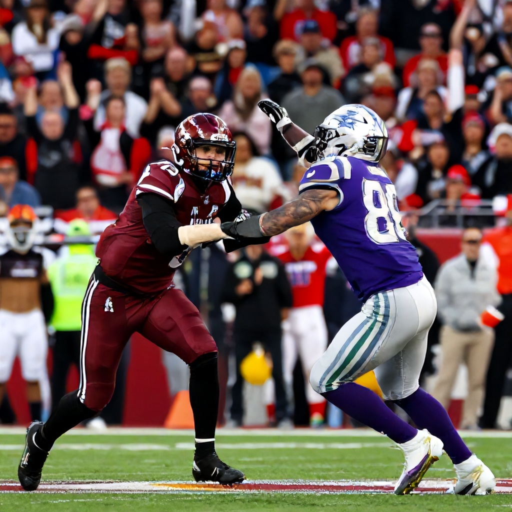

Rivalry Heats Up at McMahon Stadium
As the 2026 Canadian Football League season unfolds, one of the most anticipated matchups in the Western Division is set to take place this Saturday when the Calgary Stampeders host the Saskatchewan Roughriders at McMahon Stadium. With both teams vying for early-season momentum and divisional dominance, this encounter promises to be a thrilling battle of titans.
The Battle for Western Division Supremacy
The rivalry between the Calgary Stampeders and Saskatchewan Roughriders has long been one of the most compelling storylines in the CFL. This Saturday’s clash represents more than just another regular-season game—it's a crucial test of each team's readiness for the challenges ahead. The Stampeders, known for their strong home performance, will look to leverage the energy of their loyal fanbase at McMahon Stadium, while the Roughriders aim to extend their recent form and challenge Calgary's stronghold in the division.
Home Field Advantage
Calgary's home field advantage could prove pivotal in this matchup. McMahon Stadium, with its electric atmosphere, often gives the Stampeders an edge in close contests. The team's ability to perform under pressure and maintain composure in front of their supporters has been a hallmark of their success in recent seasons. However, the Roughriders have shown resilience and adaptability, particularly in their recent outing against the BC Lions last Friday where they managed to stay competitive despite facing a challenging opponent.
Early Season Stakes
With the season still in its early stages, every game carries significant weight in terms of standings and momentum. For the Stampeders, a victory would solidify their position as serious contenders in the West Division. Meanwhile, the Roughriders are looking to establish themselves as a force to be reckoned with, especially after their impressive performance against the Lions. Both teams are aware that early wins can set the tone for the rest of the campaign.
Betting Outlook
While specific betting lines for the Calgary vs Saskatchewan game are not yet available in the current data, fans and bettors alike are eagerly anticipating the release of odds. When available, these lines will offer insight into which team is favored and provide a framework for strategic betting decisions. The absence of immediate odds does not diminish the excitement surrounding this matchup, which remains one of the most compelling fixtures in the Western Division.
Looking Ahead
As the CFL continues to grow in popularity across Canada, matchups like this one serve as a testament to the league’s competitive spirit and rich tradition. Whether you're a die-hard fan or a casual observer, the clash between the Stampeders and Roughriders is sure to deliver drama, skill, and unforgettable moments. With both teams entering the game with high expectations, Saturday’s showdown is poised to be a classic example of Western Division football at its finest.